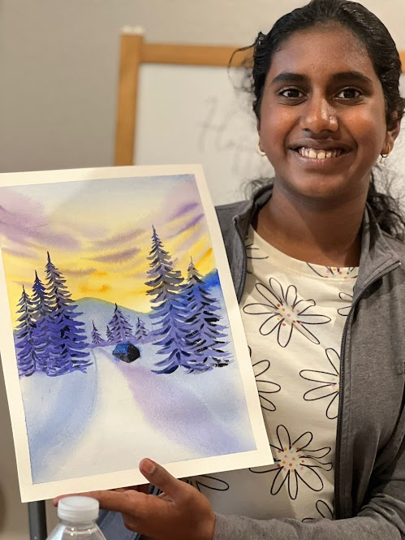

My favorite number is 3.
I found a liking for three in about first grade.
It started when I first thought that three was a lucky number.
I also thought that three was the number my teacher used for everything which made me think three was a special number.
Even though I don't think the same thing about three today it has still stayed my favorite number for all these years.
My favorite animal is a dolphin.
I developed a special liking for dolphins because of a book.
When I was small, my mom had read to me a book about how dolphins and humans interacted with each other and become great friends.
This book caused me to have a liking for.
In fact, when I was young I really wanted to meet a dolphin and see if I could have an interaction with it.
It was one of my dreams as a kid.
Although my dreams have changed my liking for dolphins has not.
Over the years I have learned so much about them and my liking for them has increased.
The dolphin and human interaction is something that should continue.

My favorite type of art is painting.
Painting is very relaxing and looks so smooth on the paper.
When done right, it can create some of the most beautiful images ever.
I have been interested in art since young age but paiting was what appealed to me the most.
It is one of the things that calms me down and it is one my hobbies as well.
It is one of the things I choose to do in my free time.
The picture below is one of the paintings that I did.
It is one of my favorites.
I hope to paint more beautiful images in the future.
 My favorite number is 3.
I found a liking for three in about first grade.
It started when I first thought that three was a lucky number.
I also thought that three was the number my teacher used for everything which made me think three was a special number.
Even though I don't think the same thing about three today it has still stayed my favorite number for all these years.
My favorite number is 3.
I found a liking for three in about first grade.
It started when I first thought that three was a lucky number.
I also thought that three was the number my teacher used for everything which made me think three was a special number.
Even though I don't think the same thing about three today it has still stayed my favorite number for all these years.